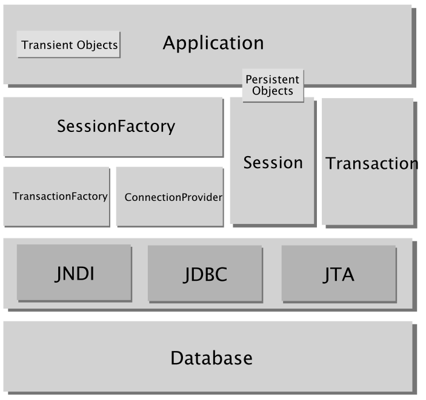
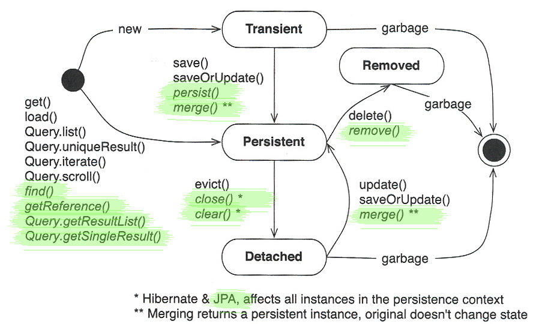

De JPA a Hibernate
De JPA a Hibernate
Una vez que hemos visto en profundidad el enfoque de JPA para solucionar el problema de la persistencia en Java, vamos a dedicar un par de sesiones a explorar cómo se puede hacer todo esto utilizando Hibernate Core, sin las extensiones para implementar JPA. En la actualidad hay muchos proyectos en funcionamiento que fueron implementados en Hibernate y que no se han portado a JPA. Si un proyecto Hibernate funciona correctamente y no hay que añadir demasiadas características nuevas, no es necesario moverse a JPA.
También hay que decir que JPA, al ser un estándar, es una versión relativamente simplificada de Hibernate. Hibernate es más potente y flexible. En palabras de Gavin King, el creador y líder del proyecto Hibernate, la especificación de JPA cubre el 95% de las necesidades cubiertas con Hibernate. Hay un 5% de funcionalidades que ofrece Hibernate y que no es posible conseguir en JPA. Sin embargo, estas funcionalidades van más allá del tiempo que tenemos para comentar Hibernate. En este capítulo y el siguiente resaltaremos principalmente las equivalencias entre ambos frameworks, y explicaremos cómo hacer en Hibernate lo que ya sabemos hacer en JPA.
Por último, una ventaja de Hibernate es la buena integración con frameworks como Spring y en otros proyectos Open Source. Esto es debido, básicamente, a la madurez del framework. Es de suponer que con el tiempo aumentará la integración de JPA en Spring y otros frameworks populares, así como en entornos de desarrollo.
Repaso: hola mundo en JPA y Hola mundo en Hibernate.
Recordemos el programa HolaMundo en JPA:
public class HolaMundo {
public static void main(String[] args) {
...
EntityManagerFactory emf = Persistence
.createEntityManagerFactory("simplejpa");
EntityManager em = emf.createEntityManager();
em.getTransaction().begin();
// Busco el autor y lo creo si no existe
autor = em.find(Autor.class, autorStr);
if (autor == null) {
autor = new Autor();
autor.setNombre(autorStr);
autor.setCorreo(autorStr + "@ua.es");
em.persist(autor);
}
// Miro si el autor ya un mensaje
if (autor.getMensaje() == null) {
// Nuevo mensaje
mensaje = new Mensaje();
mensaje.setAutor(autor);
mensaje.setTexto(mensStr);
em.persist(mensaje);
} else {
// Modifico el mensaje que ya existe
Long mensId = autor.getMensaje().getId();
mensaje = em.find(Mensaje.class, mensId);
mensaje.setTexto(mensStr);
}
em.getTransaction().commit();
em.close();
emf.close();
}
}
Y esta es la versión del mismo programa en Hibernate:
import org.hibernate.*;
import entity.Autor;
import entity.Mensaje;
public class HolaMundo {
public static void main(String[] args) {
Autor autor;
Mensaje mensaje;
String autorStr, mensStr;
SessionFactory sessionFactory =
new Configuration().configure().buildSessionFactory();
Session session = sessionFactory.getCurrentSession();
// Leo el mensaje y el autor
try {
BufferedReader in = new BufferedReader(
new InputStreamReader(System.in));
System.out.print("Nombre: ");
autorStr = in.readLine();
System.out.print("Mensaje: ");
mensStr = in.readLine();
} catch (IOException e) {
autorStr = "Error";
mensStr = "Error";
}
session.beginTransaction();
// Busco el autor y lo creo si no existe
autor = (Autor) session.get(Autor.class, autorStr);
if (autor == null) {
autor = new Autor();
autor.setNombre(autorStr);
autor.setCorreo(autorStr + "@ua.es");
session.save(autor);
}
// Creo el mensaje
mensaje = new Mensaje();
mensaje.setAutor(autor);
mensaje.setTexto(mensStr);
session.save(mensaje);
// Lo añado al autor
Collection<Mensaje> mensajes = autor.getMensajes();
mensajes.add(mensaje);
session.getTransaction().commit();
// Imprimimos todos los mensajes del autor
System.out.println(autor.getNombre() + " ha escrito " + mensajes.size() + " mensajes:");
Iterator<Mensaje> it = mensajes.iterator();
while (it.hasNext()) {
Mensaje mens = it.next();
System.out.println(mens.getTexto());
}
sessionFactory.close();
}
}
Como se puede comprobar, el funcionamiento de Hibernate es muy similar al de JPA. Existe una factoría de la que se obtiene una sesión de Hibernate (objeto Session equivalente al EntityManager de JPA). Con la sesión podemos abrir y cerrar la transacción, obtener entidades y guardarlas en la base de datos.
En lo que respecta a las entidades, son también similares a las de JPA. Se trata de POJOs en forma de Java Beans (objetos Java con atributos accedidos por los setters y getters). Se recuperan de la base de datos llamando al método get de la sesión (en lugar del find sobre el entityManager). Se graban en la base de datos utilizando el método save de la sesión (en lugar del persist del entityManager).
Las entidades siguen funcionado como objetos Java que están relacionados y que pueden recorrerse. El código Java propiamente dicho es el mismo en la versión JPA y en la versión Hibernate.
En cuanto a las diferencias más importantes, veremos más adelante que la definición de entidades en Hibernate es mucho más complicada que en JPA, ya que Hibernate define el mapeo de las entidades a tablas mediante ficheros XML.
La configuración de la conexión de Hibernate con la base de datos se define también en en un fichero XML similar al persistence.xml de JPA.
Todos estos detalles los veremos más adelante. En esta primera sesión explicaremos cómo Hibernate define el mapeo entidad-relación. La segunda sesión la utilizaremos para detallar el uso de las sesiones y del funcionamiento dinámico de Hibernate, así como para repasar algunos ejemplos de queries.
Configuración de Hibernate
Para poder utilizar Hibernate en nuestra aplicación hay que instalar un conjunto de librerías en el CLASSPATH y configurar sus características.
Las librerías necesarias son las propias del proyecto Hibernate Core más un conjunto de librerías de otros proyectos open source que utiliza Hibernate. Todas están disponibles en el paquete Hibernate Core de la web de Hibernate. La versión más reciente es la 3.3.1.GA, lanzada en septiembre de 2008. En la distribución se encuentran las siguientes librerías necesarias:
- antlr-2.7.5.jar
- commons-collections-3.1.jar
- dom4j-1.6.1.jar
- hibernate3.jar
- hibernate-testing.jar
- javassist-3.4.GA.jar
- jta-1.1.jar
- slf4j-api-1.5.2.jar
- slf4j-simple-1.5.2.jar
- mysql-connector-java-5.1.6-bin.jar
La librería slf4j-simple-1.5.2.jar no está incluida en la distribución original y hay que añadirla si se quiere mostrar los mensajes de log por la salida estándar.
El fichero hibernate.cfg.xml define la configuración de Hibernate. Debe llamarse de esa forma y encontrarse en la raíz del classpath.
<?xml version='1.0' encoding='utf-8'?>
<!DOCTYPE hibernate-configuration PUBLIC
"-//Hibernate/Hibernate Configuration DTD 3.0//EN"
"http://hibernate.sourceforge.net/hibernate-configuration-3.0.dtd">
<hibernate-configuration>
<session-factory>
<property name="connection.url">jdbc:mysql://localhost/jpa</property>
<property name="connection.username">root</property>
<property name="connection.password">root</property>
<property name="connection.driver_class">com.mysql.jdbc.Driver
</property>
<property name="dialect">org.hibernate.dialect.MySQLDialect
</property>
<property name="current_session_context_class">thread</property>
<property name="transaction.factory_class">
org.hibernate.transaction.JDBCTransactionFactory</property>
<property name="cache.provider_class">
org.hibernate.cache.NoCacheProvider</property>
<property name="hibernate.show_sql">true</property>
<property name="hbm2ddl.auto">update</property>
<mapping resource="mappings.hbm.xml"/>
</session-factory>
</hibernate-configuration>
El elemento mapping define la localización en el classpath de los ficheros de mapeo. Se pueden definir tantos ficheros de mapeo como se desee. Las dos opciones más utilizadas son crear un único fichero de mapeo en el que se definen todos los mapeos de todas las clases o separar en tantos ficheros de mapeo como clases se definan en la aplicación. En este último caso se suele nombrar los ficheros de mapeo con el nombre de la clase y la extensión .hbm.xml (por ejemplo: Autor.hbm.xml).
Mapeo de entidades
El concepto de entidad en Hibernate es el mismo que en JPA: una entidad existe independientemente de las referencias que otros objetos mantienen hacia ella. Esto contrasta con el modelo usual de Java en el que los objetos no referenciados se eliminan con la recolección de basura. Las entidades deben ser borradas y grabadas explícitamente (excepto en el caso de que sea un borrado o un grabado en cascada desde una entidad padre a su hijo).
En Hibernate el código Java de las entidades es el mismo que el de JPA. Son clases Java con setters y getters, un identificador y un constructor vacío.
Las clases deben cumplir cuatro condiciones:
- La clase debe tener un constructor sin argumento.
- Un atributo debe hacer de identificador. Se recomienda que el este identificador sea de un tipo nullable (esto es, no primitivo).
- Clases no finales. Todos los métodos deben ser públicos y no finales, para que Hibernate pueda sobrecargarlos e implementar los proxies que permiten acceder de forma lazy a otras entidades.
- Declarar métodos de acceso para los atributos persistentes. Los métodos pueden llamarse getFoo, isFoo y setFoo y no es necesario que sean públicos.
Por ejemplo, la clase persistente Autor es la siguiente:
public class Autor {
private String nombre;
private String correo;
private Integer edad;
private Set<Mensaje> mensajes = new HashSet<Mensaje>();
public Autor() {}
public String getNombre() {return nombre;}
public void setNombre(String nombre) {this.nombre = nombre;}
public String getCorreo() {return correo;}
public void setCorreo(String correo) {this.correo = correo;}
public Set<Mensaje> getMensajes() {return mensajes;}
public void setMensajes(Set<Mensaje> mensajes) {
this.mensajes = mensajes;}
}
package entity;
import java.util.Date;
public class Mensaje {
private long id;
private String texto;
private Date creado;
Autor autor;
public Mensaje() {}
public long getId() {return id;}
public void setId(long id) {this.id = id;}
public String getTexto() {return texto;}
public void setTexto(String texto) {this.texto = texto;}
public Autor getAutor() {return autor;}
public void setAutor(Autor autor) {this.autor = autor;}
public Date getCreado() {return creado;}
public void setCreado(Date creado) {this.creado = creado;}
}
Vemos que se cumplen todas las condiciones. La clase tiene un constructor vacío. El atributo nombre hace de identificador. Los métodos no son finales. Y los métodos de los atributos que van a ser persistentes (todos) son del tipo get y set.
El fichero de mapeo es
<?xml version="1.0"?>
<!DOCTYPE hibernate-mapping PUBLIC
"-//Hibernate/Hibernate Mapping DTD 3.0//EN"
"http://hibernate.sourceforge.net/hibernate-mapping-3.0.dtd">
<hibernate-mapping>
<class name="entity.Autor" table="Autor">
<id name="nombre" type="string" column="nombre"/>
<property name="correo" type="string" column="correo"/>
<property name="edad" type="integer" column="edad"/>
<set name="mensajes" inverse="true">
<key column="autor_nombre"/>
<one-to-many class="entity.Mensaje"/>
</set>
</class>
<class name="entity.Mensaje" table="Mensaje">
<id name="id" column="id">
<generator class="native"/>
</id>
<property name="texto" type="string" column="texto" not-null="true"/>
<property name="creado" type="date" column="creado"/>
<many-to-one name="autor"
column="autor_nombre"
class="entity.Autor"
not-null="true"/>
</class>
</hibernate-mapping>
Más adelante explicaremos con más detalle el mapeo de las relaciones entre entidades.
Tipos de valores
Una entidad Java puede estar compuesta de valores primitivos, componentes o referencias a otras entidades (en forma de relaciones).
En la aplicación Java, todos estos elementos son tipos y objetos Java. El trabajo de Hibernate es mapearlos a tipos de la base de datos relacional. Para ello, se definen los siguientes mapeos básicos de Hibernate:
- integer,long,short,float,double,character,byte,boolean,yes_no,true_false: estos mapeos transforman los tipos básicos de Java (y sus clases wrappers) en los tipos SQL apropiados (dependientes del vendedor). Los mapeos boolean, yes_no y true_false son distintos nombres para booleanos.
- string: mapeo de java.lang.String a VARCHAR (o VARCHAR2 de Oracle).
- date,time,timestamp: mapeo de la clase java.util.Date y sus subclases a los tipos SQL DATE,TIME y TIMESTAMP (o equivalentes).
- calendar,calendar_date: mapeo de java.util.Calendar a los tipos SQL TIMESTAMP y DATE (o equivalentes).
- locale,timezone,currency: mapeo de java.util.Locale,java.util.Timezone y java.util.Currency a VARCHAR (o VARCHAR2 de Oracle). Las instancias de Locale y Currency se mapean a sus códigos ISO. Las instancias de TimeZone se mapean a su ID.
- binary: mapeo de array de bytes al tipo binario SQL apropiado.
- text: mapeo de cadenas largas de Java al tipo SQL TEXT o CLOB.
- serializable: mapeo de un tipo Java serializable a un tipo binario SQL.
Métodos equals y hashMap
Una característica importante de las clases persistentes es que debemos definir los métodos equals y hashCode para que funcione correctamente la comprobación de igualdad entre dos entidades y el contrato con la clase Set en las entidades desconcectadas.
Por defecto, Java define la igualdad equals entre dos objetos como igualdad de referencia. Dos variables son iguales en términos equals si apuntan al mismo objeto. Sin embargo, cuando estamos tratando con objetos que contienen datos en sus atributos, la mayoría de las veces nos interesa interpretar como iguales a objetos que tienen el mismo contenido.
Cuando los objetos se encuentran en la misma sesión de Hibernate y están gestionados, las instancias que se refieren a un mismo registro no se duplican, y la comparación con el == es correcta. Por ejemplo:
Autor autor1 = (Autor) session.get(Autor.class, autorStr);
Autor autor2 = (Autor) session.get(Autor.class, autorStr);
if (autor1 == autor2) {
System.out.println("Iguales en referencia");
}
if (autor1.equals(autor2) {
System.out.println("Iguales en contenido");
}
Sin embargo, si en algún momento vamos a desconectar las entidades es muy recomendable sobrecargar equals para que se realice la comparación mediante el contenido de los objetos. Por ejemplo:
Collection<Mensaje> mensajes = Collection<Mensaje> autorEAO.allMensajesAutor(autor);
Mensaje mejorMensaje = mensajeEAO.findMejorMensaje();
if (mensajes.contains(mejorMensaje)) {
autor.setMejor(true);
...
}
La solución recomendada por Hibernate es implementar equals en terminos de una clave de negocio (business key) que identifica de forma unívoca el objeto. Por ejemplo, en el caso del Autor sería el nombre (se debería llamar login), un identificador único. En el caso en que el identificador sea autogenerado por Hibernate, deberíamos obtener otro propio del objeto, ya que el identificador autogenerado sólo se crea en el momento de hacer persistente el objeto. ¿Qué sucedería si queremos comprar un objeto antes de insertarlo en un registro de la tabla? Por ello es necesario definir el método equals de forma que se utilicen sólo atributos del objeto.
Ejemplo:
public class Cat {
...
public boolean equals(Object other) {
if (this == other) return true;
if ( !(other instanceof Cat) ) return false;
final Cat cat = (Cat) other;
if ( !cat.getId().equals( getId() ) ) return false;
if ( !cat.getMother().equals( getMother() ) ) return false;
return true;
}
public int hashCode() {
int result;
result = getMother().hashCode();
result = 29 * result + getLitterId();
return result;
}
}
La única condición para la implementación de hashCode es que dos objetos deben devolver el mismo hashCode cuando equals() devuelve true.
Componentes
En una entidad pueden existir atributos que son de clases definidas por el programador, pero que no se mapean en entidades. Queremos que estos atributos se mapeen directamente en columnas de la tabla. En JPA teníamos la anotación @embedded, en Hibernate tenemos el elemento component.
Veamos el siguiente ejemplo. Definimos una clase Persona en la que uno de los atributos de tipo Nombre. A su vez, la clase Nombre está formada por tres atributos de tipo String. No queremos que los objetos de tipo Nombre sean entidades (no queremos que un nombre pueda estar relacionado con más de una persona), sino que representen valores primitivos que se guardan en la base de datos, como un conjunto de columnas.
public class Persona {
private String key;
private java.util.Date cumpleanyos;
private Nombre nombre;
public Persona() {}
private void setKey(String key) {
this.key=key;
}
public String getKey() {
return key;
}
public java.util.Date getCumpleanyos() {
return cumpleanyos;
}
public void setCumpleanyosy(java.util.Date cumpleanyos) {
this.cumpleanyos = cumpleanyos;
}
public Nombre getNombre() {
return nombre;
}
public void setName(Nombre nombre) {
this.nombre = nombre;
}
}
public class Nombre {
String nombre;
String primerApellido;
String segundoApellido;
public String getPrimerApellido() {
return primerApellido;
}
void setPrimerApellido(String apellido) {
this.primerApellido = apellido;
}
public String getSegundoApellido() {
return segundoApellido;
}
void setLast(String segundoApellido) {
this.segundoApellido = segundoApellido;
}
public String getNombre() {
return nombre;
}
void setInitial(String nombre) {
this.nombre = nombre;
}
}
Para guardar los atributos de los Nombre embebidos en la tabla Persona, Hibernate utiliza el elemento component en la descripción del mapeo.
<?xml version="1.0"?>
<!DOCTYPE hibernate-mapping PUBLIC
"-//Hibernate/Hibernate Mapping DTD 3.0//EN"
"http://hibernate.sourceforge.net/hibernate-mapping-3.0.dtd">
<hibernate-mapping>
<class name="entity.Persona" table="Persona">
<id name="Key" column="pid" type="string">
<generator class="uuid"/>
</id>
<property name="cumpleanyos" type="date"/>
<component name="Nombre" class="entity.Nombre">
<property name="nombre"/>
<property name="primerApellido"/>
<property name="segundoApellido"/>
</component>
</class>
</hibernate-mapping>
De esta forma, se la tabla Persona se define con los campos correspondientes a los atributos de la clase Nombre. Cuando se lee un registro de la tabla, se crea un objeto de clase Nombre y se guarda una referencia a él en el nuevo objeto de tipo Persona.
Mapeo de relaciones
Vamos a presentar dos ejemplos para comprobar cómo se realiza el mapeo de relaciones en Hibernate: el ejemplo clásico de relación uno-a-muchos y la relación muchos-a-muchos.
Básicamente existen dos formas de mapear una relación entre dos entidades. La primera es utilizando una clave ajena en una de las tablas que referencia a la clave primaria de la otra tabla. La segunda es utilizando una tabla join con claves ajenas a las claves primarias de ambas tablas. Dependiendo del tipo de relación definida se usa una estrategia u otra. Por ejemplo, para definir una relación uno-a-muchos bidireccional se usa una clave ajena, mientras que una relación muchos-a-muchos bidireccional se implementa con una tabla join. Para conocer todas las posibles combinaciones y formas de construir relaciones, es aconsejable consultar el manual de referencia de Hibernate.
Relación uno-a-muchos
Veamos por el caso más sencillo, una relación uno-a-muchos bidireccional de tipo padre-hijo. Es la relación que definimos en el ejemplo entre un autor y los mensajes que ha escrito. En una relación padre-hijo la entidad padre tiene una referencia a una colección de entidades que, conceptualmente, forman parte de él. Por ejemplo, es la relación que se podría definir entre un producto y sus partes o entre una factura y sus artículos. Las relaciones de este tipo se definen en cascada y si se borra o graba el padre también se deben borrar los hijos asociados.
Vamos a utilizar el ejemplo de la relación entre Autor y Mensaje. En la entidad Autor debemos definir un atributo que sea una colección de objetos Mensaje. Esta colección puede ser cualquiera de las interfaces del framework de colecciones Java: Set, Collection, List, Map o Map. Escogeremos una u otra dependiendo del tipo de colección Java que necesitemos utilizar en la aplicación. Hibernate puede mapear cualquiera de estos tipos. Si queremos que la relación sea bidireccional en Mesaje debemos definir un atributo en el que se guardará el Autor con el que cada mensaje está relacionado.
El siguiente fichero de mapeo muestra cómo se define la relación:
<hibernate-mapping>
<class name="Autor">
<id name="autorId">
<generator class="sequence"/>
</id>
<property name="nombre" type="string"/>
<set name="mensajes">
<key column="autorId"/>
<one-to-many class="Mensaje"/>
</set>
</class>
<class name="Mensaje">
<id name="mensajeId" column="mensajeId">
<generator class="sequence"/>
</id>
<property name="texto" type="string"/>
<many-to-one name="autor"
column="autorId"
class="Autor"
not-null="true"/>
</class>
</hibernate-mapping>
Esto se mapea con las siguiente definiciones SQL de tablas:
create table autor (autorId bigint not null primary key, nombre varchar(255)) create table mensaje (mensajeId bigint not null primary key, texto varchar(255), autorId bigint ) alter table mensaje add constraint mensajefk0 (autorId) references autor
Es muy importante recordar que cuando se define una relación bidireccional, hay que marcar uno de los lados con la etiqueta inverse. Básicamente, esto le dice a Hibernate que no ignore esa relación y que la obtenga a partir de su relación espejo en el otro lado. Cuando actualicemos una relación bidireccional, hay que asegurarse de actualizar siempre el lado no inverso. Aunque una recomendación mejor es actualizar siempre ambos lados de la relación (evitamos errores y mantenemos consistente la relación en memoria por si no se hace un flush).
Vemos que es una típica relación definida por una clave ajena de mensaje a autor.
Si queremos hacer la relación bidireccional debemos añadir al mensaje el atributo que apunta a su autor. En el fichero de mapeo declaramos que este atributo se corresponde a una relación muchos-a-uno (la inversa de la definida en autor) y en el mapeo de autor debemos indicar que se ha definido la relación bidireccional poniendo el elemento inverse a true. También ponemos el elemento not-null de mensaje a true para indicar que no puede haber mensajes sin autores.
<hibernate-mapping>
<class name="Autor">
<id name="autorId">
<generator class="native"/>
</id>
<property name="nombre" type="string"/>
<set name="mensajes">
<key column="autorId" inverse="true"/>
<one-to-many class="Mensaje"/>
</set>
</class>
<class name="Mensaje">
<id name="id" column="id">
<generator class="native"/>
</id>
<property name="texto" type="string"/>
<many-to-one name="autor"
column="autorId"
class="Autor"
not-null="true"/>
</class>
</hibernate-mapping>
La definición de clases anteriores genera las siguientes tablas:
create table parent ( id bigint not null primary key )
create table child ( id bigint not null
primary key,
name varchar(255),
parent_id bigint not null )
alter table child add constraint childfk0 (parent_id) references
parent
Al igual que en JPA, para hacer persistente esta relación hay que actualizar el campo
Un ejemplo de cómo añadir objetos a la relación:
Cat cat = new DomesticCat(); Cat kitten = new DomesticCat(); .... Set kittens = new HashSet(); kittens.add(kitten); cat.setKittens(kittens); session.persist(cat); kittens = cat.getKittens(); // Okay, kittens collection is a Set (HashSet) cat.getKittens(); // Error!
Relación muchos-a-muchos
Por otro lado, si un mensaje puede tener más de un autor debemos definir una relación muchos-a-muchos. Supongamos que la relación es unidireccional y que en la definición de clases un Autor tiene una colección de mensajes escritos y que más de un autor puede haber sido autor del mismo mensaje. Debemos definir la relación como many-to-many en el lado del autor y utilizar una tabla más en el modelo relacional. Se trata de la tabla autor-mensaje que define la relación muchos-a-muchos relacionando las parejas de autor y mensaje
<hibernate-mapping>
<class name="Autor">
<id name="autorId">
<generator class="native"/>
</id>
<property name="nombre" type="string"/>
<set name="mensajes" table="autor-mensaje">
<key column="autorId"/>
<many-to-many class="mensaje" column="mensajeId"/>
</set>
</class>
<class name="Mensaje">
<id name="mensajeId">
<generator class="sequence"/>
</id>
<property name="texto"/>
</class>
</hibernate-mapping>
Las definiciones de tablas generadas son:
create table autor (autorId bigint not null primary key, nombre varchar(255)) create table mensaje (mensajeId bigint not null primary key, texto varchar(255)) create table autor-nombre (autorId bigint not null, mensajeId bigint not null, primary key (autorId, mensajeId))
Relaciones de herencia
Al igual que JPA, Hibernate permite tres estrategias para implementar el mapeo de las relaciones de herencia:
- Tabla única por jerarquía de clases
- Tabla por subclase
- Tabla por clase concreta
Veamos un ejemplo de la primera opción, la más común. Supongamos la misma jerarquía de clases que vimos en JPA.
La entidad EmpleadoContratado extiende la clase Empleado, añadiendo el atributo planPensiones:
public class EmpleadoContratado extends Empleado {
private Long planPensiones;
public Long getPlanPensiones() {
return planPensiones;
}
public void setPlanPensiones(Long planPensiones) {
this.planPensiones = planPensiones;
}
}
La entidad EmpleadoBecario extiende la clase Empleado, añadiendo el atributo seguroMedico:
public class EmpleadoBecario extends Empleado {
private Long seguroMedico;
public Long getSeguroMedico() {
return seguroMedico;
}
public void setSeguroMedico(Long seguroMedico) {
this.seguroMedico = seguroMedico;
}
}
Para definir el mapeo, al igual que en JPA, hay que indicar la tabla que va a contener toda la jerarquía, la columna y los valores discriminantes. Un elemento class define toda la jerarquía:
<class name="Empleado" table="EMPLEADO">
<id name="empleadoId" type="long" column="EMPLEADO_ID">
<generator class="native"/>
</id>
<discriminator column="TIPO" type="string"/>
<property name="nombre" type="string" column="NOMBRE"/>
...
<subclass name="EmpleadoContratado" discriminator-value="contrato">
<property name="planPensiones" type="long" column="PLAN_PENSIONES"/>
</subclass>
<subclass name="EmpleadoBecario" discriminator-value="beca">
<property name="seguroMedico" type="long" column="SEGURO_MEDICO"/>
</subclass>
</class>
Arquitectura de Hibernate
La arquitectura de Hibernate es idéntica a la de JPA, cambiando los nombres de los elementos:

El ciclo de vida de una entidad es el mismo que en JPA, cambiando los nombres de los métodos:
